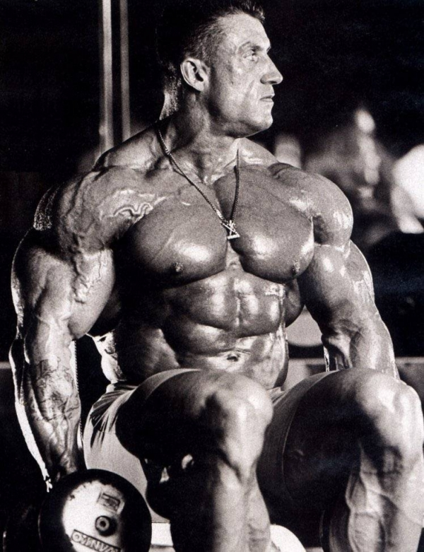
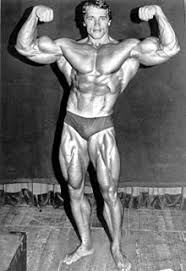
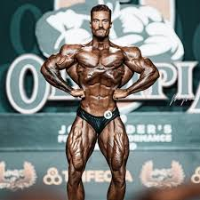

Ronnie Colemann

Es un exfisicoculturista profesional y exagente de policía estadounidense. Ganó ocho veces consecutivas el título de Mister Olympia . Es considerado por muchos atletas y periodistas como el mejor culturista de toda la historia de este deporte, Además de sus ocho títulos en Mr. Olympia, ostentaba el récord de más victorias como profesional de la IFBB con 26 títulos, hasta que Dexter Jackson lo batió, otra de las cosas que lo hizo conocido son sus famosas frases como: "Yeah Buddy", o "Lightweight Baby". la última haciendo referencia a uno de sus lemas: "Si puedes levantarlo, entonces es liviano".
Dorian Yates
Su reinado como Mr. Olympia terminó al retirarse, forzado en gran parte por la acumulación de lesiones; Yates sufrió un desgarro de bíceps y tríceps, siendo esta última sólo tres semanas antes de su última participación en el Olympia, que ganó en 1997. Su récord profesional al retirarse incluía 15 victorias y 2 segundos puestos. Se considera que Yates revolucionó el entrenamiento culturista, tal como hicieron otros culturistas que dominaron el deporte por muchos años, tales como Lee Haney. Es un defensor del estilo de entrenamiento de Mike Mentzer conocido como HIT "High Intensity Training". Sin embargo las entrevistas realizadas a Yates y sus rutinas publicadas muestran que en la práctica modificó la aplicación de las teorías de Mentzer de forma considerable. El sistema HIT aboga por varios ejercicios diferentes y muy pocas series por cada grupo muscular. Mentzer creía que la estimulación del músculo para crecer podía ser provocada en un periodo de tiempo corto aplicando la suficiente intensidad, en lugar de entrenar durante largos periodos de tiempo. En 1994 Dorian se unió a la corporación californiana "Heavy Duty Inc." junto a Mike Mentzer y Ray Mentzer.
Arnold Schwarzenegger
Schwarzenegger está considerado como una de las figuras más importantes de la historia del culturismo, y su legado se conmemora en la competición anual de culturismo Arnold Classic . Ha seguido siendo un rostro destacado del culturismo mucho después de su retiro, en parte debido a su propiedad de gimnasios y revistas de fitness. Ha presidido numerosos concursos y entregas de premios. Durante muchos años, escribió una columna mensual para las revistas de culturismo Muscle & Fitness y Flex . Poco después de ser elegido gobernador, fue nombrado editor ejecutivo de ambas revistas, en una capacidad en gran parte simbólica. Las revistas acordaron donar $ 250,000 al año a las diversas iniciativas de acondicionamiento físico del gobernador. Cuando el acuerdo, incluido el contrato que le dio a Schwarzenegger al menos $ 1 millón al año, se hizo público en 2005, muchos lo criticaron por ser un conflicto de intereses ya que la oficina del gobernador tomaba decisiones sobre la regulación de los suplementos dietéticos en California. En consecuencia, Schwarzenegger renunció al papel de editor ejecutivo en 2005. American Media Inc., propietaria de Muscle & Fitness y Flex , anunció en marzo de 2013 que Schwarzenegger había aceptado su oferta renovada para ser editor ejecutivo de las revistas. Una de las primeras competiciones que ganó fue el concurso Mr. Europa Junior en 1965. Ganó el Mr. Europa al año siguiente, a los 19 años. Continuaría compitiendo en muchos concursos de culturismo y ganaría la mayoría de ellos. Sus victorias en culturismo incluyeron cinco victorias en Mr. Universo (4 – NABBA [Inglaterra], 1 – IFBB [EE. UU.]) y siete victorias en Mr. Olympia, un récord que se mantendría hasta que Lee Haney ganó su octavo título consecutivo de Mr. Olympia en 1991. Schwarzenegger sigue entrenando. Cuando se le preguntó sobre su entrenamiento personal durante el Arnold Classic de 2011 , dijo que todavía entrenaba media hora con pesas todos los días.
CBUM
Chris Bumstead nació y se crio en Ottawa, Ontario, donde participó en múltiples deportes, desde fútbol, béisbol, baloncesto o hockey. Comenzó a levantar pesas a la edad de 14 años y fue ganado músculos hasta sus 102 kilogramos actuales, aumentando sobre todo el tamaño de sus piernas. Tras empezar a entrenar con el novio de su hermana, el culturista profesional Iain Valliere, es ya uno de los mejores del mundo. Hizo su debut competitivo a los 19 años en 2014 y obtuvo su tarjeta profesional de la IFBB a los 21 años.